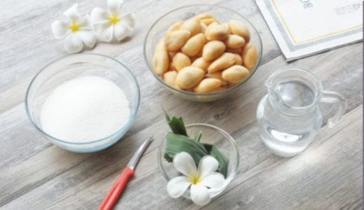

ร้อน ๆ แบบนี้ จัดเมนูหวานเย็นเลยค่ะ สละลอยแก้ว สละสุมาลีหอม ๆ กลิ่นรัญจวนใจมากค่ะ จะทานทีเดียวก็ไม่หมด นำมาแปรรูปเก็บไว้ทานได้นานขึ้น แถมชื่นใจมาก ๆ เลยค่ะ
ผลไม้ไทยที่มีรสชาติเปรี้ยว ๆ หวาน ก็คงจะนึกถึงสละกันเลยค่ะ อร่อยตอนทานลำบากตอนแกะ แต่ก็ถือว่าคุ้มมาก ๆ ค่ะ แกะออกมาแล้วมีเท่าไหร่ก็ไม่พอ วันนี้นำสละมาแปรรูปเป็น “สละลอยแก้ว” ทานเย็น ๆ ชื่นใจเหมาะกับอากาศบ้านเรามาก ๆ เลยค่ะ วัตถุดิบก็ไม่ยุ่งยาก ตามมาดูกันเลยค่า
เวลาเตรียม : 10 นาที / เวลาปรุง : 10 นาที / แคลอรี่ : 150 Kcal/เสิร์ฟ
มือนี้สำหรับทาน : 4 ท่าน
1.สละสุมาลี 1000 กรัม
2.น้ำตาลทราย 400 กรัม
3.ใบเตย 5 ใบ
4.น้ำเปล่า 1 ลิตร
5.เกลือป่น 1/2 ช้อนชา
1.นำสละที่ปอกเปลือกแล้ว ใช้มีดปอกผลไม้ ที่มีลักษณะเรียวเล็ก ปลายโค้งเล็กน้อยค่ะ ใช้มีดเสียบเข้าตรงกลางทางด้านขั้วผล โดยให้ลึกจนเกือบสุดเมล็ด ค่อย ๆ เสียบปลายมีดเรียบตามผิวเมล็ด สังเกตุได้จาการสัมผัสขณะเสียบปลายมีดนะคะ
2.จับเมล็ดสละให้แน่น และถนัดมือ แล้วทำการคว้านมีดเป็นวงกลมเรียบไปกับผิวเมล็ดจนสุดมาที่เดิมค่ะ
3.กลับด้านเมล็ดสละให้ด้านท้ายผลหันเข้าหาตัวเรา
4.หลังจากนั้นเสียบปลายมีดให้เข้าตรงกลาด้านท้ายผลจนถึงเมล็ด แล้วดันปลายมีดไปด้านหน้าเพื่อดันเมล็ดออก
5.เสร็จแล้วนำสละไปแช่ในน้ำเกลือไว้ค่ะ
6.ตั้งน้ำไฟแรงจนเดือด หลังจากนั้นลดเป็นไฟอ่อนค่ะ ใส่น้ำตาลทรายลงไปเคี่ยวจนน้ำตาลละลายค่ะ
7.เมื่อน้ำตาลละดีแล้ว ใส่ใบเตยลงไปค่ะ เพื่อให้มีกลิ่นหอม
8.สละที่สะเด็ดน้ำเกลือแล้ว ใส่ลงในหม้อน้ำเชื่อม เติมเกลือป่นลงไปค่ะ คนให้เข้ากันดี รอจนน้ำเดือดอีกครั้งปิดไฟ พักไว้จนเย็นค่ะ
9.นำสละลอยแก้ว จัดใส่ชาม เติมด้วยน้ำแข็งเย็น ๆ แค่นี้ก็จัดเสิร์ฟได้เลยค่า
TIPS การเลือกสละ
ควรเลือกสละที่สด สละสดจะต้องปอกได้ง่ายค่ะ
สละสุมาลี เหมาะกับการทำสละลอยแก้วค่ะ เพราะมีรสชาติอมเปรี้ยวอมหวานนิด ๆ ค่ะ จะได้ตัดกับความหวานของน้ำเชื่อมค่ะ
ไม่ยุ่งยากเลยค่ะ แถมชื่นใจมาก ๆ กับเมนู “สละลอยแก้ว” หวานเย็นชื่นใจ ใส่น้ำแข้ง ถ้วยเดียวไม่พอเลยค่ะ เพื่อน ๆ ลองทำกันดูนะคะ หรือจะลองทำเป็นสูตรเมนูขนมรังผึ้งก็ดีงามเช่นกันค่า :)